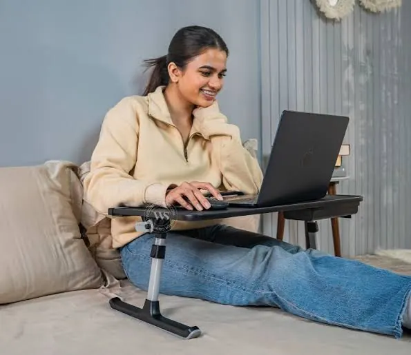

Laptops
Best Laptops for Students: What to Look for on a Budget
Find a student laptop that balances price, battery life, performance, portability, and durability. Learn which specifications matter and where you can save money.
Start With Your Course Requirements
The best student laptop will depend on what you’ll need to run for your studies. While having a high-powered laptop may be desirable, you may not need one if you’re mostly using your laptop for word processing, virtual lessons, researching and presenting. However, students studying Engineering, Architecture, Media and Computer Science may need more memory, storage and graphics.
First, it’s best to check what software your institution recommends. Some courses will need you to use Windows specific applications, specialist engineering software or specific development software. Some courses can be completed easily on a browser, or on both Windows and Mac. This will help you decide which device to go for.

Processor
The processor will impact how fast your laptop will run. Usually, an entry level or mid-range processor from a well-known brand will be more than sufficient for basic student use. Make sure you are aware of the exact generation/model of your processor. Sometimes two processors can have similar names but perform very differently.
If your course requires you to frequently edit videos, utilise large data sets, virtual machines or 3D software then a high performance processor may be worth investing in. However, if you will only be using it for note taking and online work, then paying extra for a high performance processor won’t really make a difference. A laptop with a balanced specification, plenty of memory and an SSD will feel much faster than a more expensive laptop with low specs.
Memory (RAM)
Having enough memory will help ensure that you won’t get frustrated switching between applications. An 8GB memory will be a great starting point for a basic student laptop. However if you want to have a more comfortable experience whilst multitasking, a 16GB would be better. Especially if you’re doing a demanding course.
Some thin laptops won’t allow you to upgrade your memory. Make sure that you know if you can upgrade your memory. If you can’t upgrade then it would be best to go for a laptop with plenty of memory to begin with. If you’re doing lots of tabs and applications then don’t go for a faster processor with less memory.
Storage
An SSD will help your laptop boot up quickly and run your applications faster. For most students an SSD will be a much better option compared to an HDD. How much storage you’ll need will depend on what you’ll be doing. If you’re only doing word documents and presentations then you won’t need much. Whereas if you’ll be doing videos, design work, games and development then you’ll quickly fill your device up.
Make sure you know whether your laptop will have extra storage, or whether you can upgrade your storage. If your laptop doesn’t have much storage then you could use an external SSD or reputable cloud storage. Make sure you have a back-up of any important assignments or project files. Having your laptop break down near your submission date can be very stressful but having a back-up will prevent it from being a disaster.
Screen Size, Quality and Resolution
A 13/14 inch laptop will be easier to carry between classes, libraries and home. A 15/16 inch laptop will give you more space to work on spreadsheets, research and split screens but will be heavier. Decide on how often you will be carrying your laptop and whether you’ll be attaching it to an external monitor.
Try to find a laptop with a comfortable screen brightness, great viewing angles and a clear resolution. Many student laptops will have a Full HD resolution. If you’ll be doing any photography or design work then this may be more important. A matte screen can help prevent glare in bright classrooms. A touchscreen isn’t necessary for most courses but can be a nice feature.
Battery Life
Battery life can make a big difference. A laptop with a good battery life will allow you to work comfortably around campus whereas a laptop with a poor battery life will mean you’re constantly searching for an outlet. Often manufacturers will give an estimate based on ideal conditions. Look for independent reviews to see how long it will last whilst browsing, watching videos or doing mixed tasks. The brightness of your screen, background applications, age of the battery and wireless usage will impact this.
How heavy the laptop is, the size of the charger, quality of the keyboard and strength of the hinges will also impact how you use your laptop. A powerful laptop but uncomfortable to carry may not be as useful as you thought. If you’re travelling to classes then make sure that the laptop, charger and accessories aren’t too heavy. If you’ll be doing lots of typing then make sure the keyboard is comfortable.
Operating System
Windows will have great compatibility with most educational and professional software. Macs are popular due to their great build quality and compatibility with other Apple devices. However they may not be compatible with all specialist applications. Chromebooks can be a great budget option but they can only be used for browser based learning, online documents and basic tasks. They’re not suitable for all desktop based applications.
Don’t go for an operating system just because your friend uses it. Make sure all your applications will run correctly and that your institution will have the licences required. Make sure your laptop has the ports you require. USB-A, USB-C, HDMI and Audio Jack will help prevent you carrying around adapters. However there can be a huge variance depending on your laptop.

What to Save Money On
Many students can save money by going for an integrated graphics card, mid-range processor and an older model (as long as it still has a valid warranty). Student discounts, seasonal deals and manufacturer certified refurbished laptops can give you the best value. Make sure you’re looking at the exact model number as often retailers will give similar names to laptops with different amounts of memory, storage and screen sizes.
Don’t save money by going for a very low amount of RAM, poor quality screen and poor build quality. This will impact how you use your laptop. Try to avoid very cheap options from unknown sellers, unclear warranty details and no reliable after-sales service. Going for a slightly more expensive laptop can be worth it if it will last longer and can be repaired locally.
Protect Your Laptop
Having a sleeve or compartment in your bag will help prevent any scratches. Don’t have any drinks near your keyboard and make sure nothing is blocking the airflow. When doing demanding tasks use your laptop on a firm surface. Clean your screen and keyboard with electronic cleaning products and follow the manufacturers guidelines.
Make sure your laptop has auto updates for your operating system, strong login and encryption if possible. Back-up your work to another location. Organise your files into subjects and semesters to make it easy to find your assignments. This will cost very little but will help protect your valuable work.
A Simple Student Laptop Checklist
Make sure you know what software you’ll need, what processor class, memory, SSD storage, screen size, battery life, weight, comfortable keyboard, ports, warranty and upgrade options you have. Look for reviews on the exact specification. If possible have a go on the keyboard and screen. Make sure you know what the returns policy is.
Think about the whole time you’ll be using the laptop. Ideally you want a laptop that will last you throughout your course. Focus on getting a reliable laptop with a balanced specification.
Conclusion
A student laptop can be very capable on a budget. Start by knowing what you’ll need for your course and focus on finding a laptop with a balanced specification. Make sure you’re not spending too much on features that will impact how you use your laptop. Back-up your files and look for a good warranty. The right laptop will make your studies easier and be reliable.
Need a hand with your printer or laptop?
Printerworld sells printers, laptops and genuine supplies, and repairs and services both. Bring in your model number and we will help you get it right.